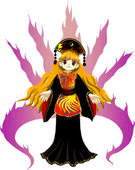
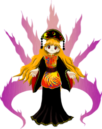

- Welcome to Touhou Wiki!
- Please register to edit. For assistance, check in with our Discord server or IRC channel.
Junko
Junko d͡ʑʲɯ̹̃ŋko̞ | |
|---|---|
|
 Junko in Legacy of Lunatic Kingdom
| |
| Species | |
| Abilities |
Purify anything |
Music Themes | |
| |
Appearances | |
| Official Games | |
| |
| Print Works | |
| |
Junko (純狐 Junko) is the main antagonist of Legacy of Lunatic Kingdom. She's a sagacious spirit and sworn enemy of Lunarians who orchestrated the invasion to the Moon for the sole purpose of killing Chang'e.
General Information[edit]
Junko appeared as the Final Boss and Extra Boss helper in Legacy of Lunatic Kingdom.
Abilities[edit]
- Ability to purify anything
Junko's power to purify anything, not to be confused with the Lunarian and Shinto concept of purity, refers to the refining of substances to remove impurities, such as in the refinement of metals. She used this power on her own grudge, strengthening it such that she became the embodiment of her resentment as a divine spirit, without even a need for an identity anymore, and on Clownpiece and other hell fairies, transforming them into beings of pure lifeforce that would threaten the Lunar Capital. She also claims to be able to kill the heroines unconditionally if they didn't use Eirin's drug and got hit at least once before facing Junko.[1]
The terms used to refer to Junko's ability, junka (純化) or junsui (純粋), differs from the terms for the Shinto concept of kegare (穢れ) referred to as "impurity", and kiyome (清め), its "purification". So, they can be understood to mean two different things. In fact, Junko refining the hell fairies into pure embodiments of life supercharged their capacity to spread impurity[2].
According to ZUN, Junko's power of purification is actually an ability to bring things back to their godly nature, before they had names, so it could be almost considered an ability to give birth to gods.[3] The nature of nameless objects and how giving names to gods makes them manifest only one of their aspects was previously described by Rinnosuke in Chapter 15 of Curiosities of Lotus Asia.
Species[edit]
Junko describes herself as a Sagacious Spirit (仙霊 Senrei), Reimu indicates that she is a more pure soul than a Lunarian or youkai[4] and ZUN mentions in his interview[3] that she is a type of divine spirit, however it's difficult to make a distinction between the two so at most, she's a Spirit.
Background Information[edit]
Name[edit]
Her known name is Junko (純狐), which is spelled with the characters for jun (純, lit. "pure, clean") and ko (狐, "Fox"). Her name meaning "pure fox" fits with the seven tail-like flames behind her and her ability to purify anything. According to her profile, she doesn't have an identity nor she desires to know what exactly she is.
Origin[edit]
Junko may be based on Chún Hú (纯狐), a Chinese legendary figure mentioned in the Zuǒ Zhuàn historical narrative and Tiānwèn poems. Chún Hú, also known as "Xuán Qī" (玄妻, lit. "dark lady"), was the wife of a Xia Dynasty ruler. Hòu Yì (后羿) usurped the previous ruler (Chún Hú's former husband) and married Chún Hú, later killing her son Bó Fēng (伯封). Chún Hú then conspired with Yi's minister to kill him as revenge. This account seems to line up with statements about Junko's past from Reisen's ending in Legacy of Lunatic Kingdom.
Despite sharing a name, the Hou Yi of the Xia Dynasty was not necessarily the same one who married Chang'e and shot down the ten suns in legend. The conflation of various historical figures named "Hou Yi" has been the subject of at least one contemporary academic paper. Within the Touhou Project however, the disparate Hou Yis appear to be treated as a single person.
Design[edit]
Junko wears a Chinese outfit of a red and yellow tabard with a red sash over a wide-sleeved black dress and a black traditional Chinese crown called a dalachi (大拉翅). She has long, orange hair and red eyes. Behind her are seven light-purple flame-like tails.
Junko's Appearances[edit]
Games[edit]
- Legacy of Lunatic Kingdom
Junko plotted the invasion to the Moon in order to get revenge on Chang'e. She filled the Near Side of the Moon with fairies, and thus life, forcing the Lunarians to escape so she could use that moment to kill Chang'e. Knowing the Lunarians would likely flee to the Dream World, she sent Hecatia to trap them there. Over half a year the Lunarians took no action against her, causing a stagnation in Junko's plan and a steady appease of her anger, growing bored every time. It was at that time when the protagonist appears before her, clean of all impurity much to her surprise. Because her anger was already appeased, she saw no goal in continuing the invasion and admitted defeat before the battle.
Literature[edit]
- Visionary Fairies in Shrine
In chapter 2 she makes an appearance when Clownpiece talks about why wasn't she born in the Earth instead of Hell.
Again, in chapter 5, she's mentioned by Eirin because she didn't know Junko was working alongside a Goddess of Hell.
Relationships[edit]
Junko and Hecatia are friends. Because Hecatia sympathized with Junko, she accompanied her in her plot against the Lunar Capital, lending Junko her powers, as well as fairies like Clownpiece.
Hecatia loaned Clownpiece to Junko to use as she wished. Clownpiece was purified into pure lifeforce and simply told to do what fairies do and play around near the Lunar Capital, at the Sea of Tranquility.
Junko has a grudge against Chang'e, because Chang'e's husband was responsible for killing Junko's son. So, she plotted against the Lunar Capital and staged an invasion to get to Chang'e.
Gallery[edit]
Cover of Legacy of Lunatic Kingdom, featuring Junko's silhouette.
Spell Cards[edit]
Junko's spell cards contain some of the most simplistic patterns ever for a final boss of the Touhou Project. Her spell cards are designed "purely" to do just that rather than showing off various kinds of patterns. Most of her spell cards use circle danmaku shapes, which is significant as circles[5] are widely viewed as "pure shapes".
Her spell cards violate the spirit of the spell card rules. The rules have been described as "the most beautiful one wins", where most characters will have some form of spell card featuring beautiful patterns, Junko's spell cards are not, due to the simplistic pattern designs.
| Name | Translated | Comments | Games | Stage | ||
|---|---|---|---|---|---|---|
| Total: 20 | ||||||
| 「掌の純光」 | "Pure Light of the Palm" | LoLK | St. 6: E/N/H/L | |||
| 「殺意の百合」 | "Lilies of Murderous Intent" | LoLK | St. 6: E/N/H/L | |||
| 「原始の神霊界」 | "Primordial Divine Spirit World" | LoLK | St. 6: E/N | |||
| 「現代の神霊界」 | "Present-Day Divine Spirit World" | LoLK | St. 6: H/L | |||
| 「震え凍える星」 | "Trembling, Shivering Star" | LoLK | St. 6: E/N/H/L | |||
| 「純粋なる狂気」 | "Pristine Lunacy" | LoLK | St. 6: E/N/H/L | |||
| 「溢れ出る瑕穢」 | "Overflowing Blemishes" | LoLK | St. 6: E/N/H | |||
| 「地上穢の純化」 | "Refinement of Earthen Impurity" | LoLK | St. 6: L | |||
| 純符「ピュアリーバレットヘル」 | Pure Sign "Purely Bullet Hell" | LoLK | St. 6: E/N | |||
| 純符「純粋な弾幕地獄」 | Pure Sign "A Pristine Danmaku Hell" | LoLK | St. 6: H/L | |||
| 「袋の鼠を追い詰める為の単純な弾幕」 | "Simple Danmaku for Cornering a Trapped Rat" | LoLK | St. Ex | |||
| 「人を殺める為の純粋な弾幕」 | "Pristine Danmaku for Killing a Person" | LoLK | St. Ex | |||
| 「最初で最後の無名の弾幕」 | "First and Last Nameless Danmaku" | Co-owner with Hecatia | LoLK | St. Ex | ||
| 「震え凍える悪夢」 | "Trembling, Shivering Nightmare" | VD | Wrong Friday - 2 | |||
| 「サイケデリックマンダラ」 | "Psychedelic Mandala" | VD | Wrong Friday - 3 | |||
| 「極めて威厳のある純光」 | "Exceedingly Majestic Pure Light" | VD | Wrong Friday - 4 | |||
| 「確実に悪夢で殺す為の弾幕」 | "Danmaku for Killing with Certainty via Nightmares" | VD | Wrong Friday - 5 | |||
| 紺珠符「純粋と不純の弾幕」 | Ultramarine Orb Sign "Pure and Impure Danmaku" | Co-owner with Hecatia | VD | Nightmare Friday - 2 | ||
| 萃珠符「純粋な五里霧中」 | Gathering Orb Sign "Purely Beyond All in the Fog" | Co-owner with Suika | VD | Nightmare Friday - 3 | ||
| 永珠符「穢れ無き珠と穢れ多き霊」 | Eternal Orb Sign "An Unsullied Orb and a Much-Sullied Spirit" | Co-owner with Mokou | VD | Nightmare Friday - 6 | ||
Additional Information[edit]
- Junko is the first Windows era character with an official profile who does not have a proper title. This is likely because she purified herself of identifying information. Koakuma and Daiyousei also do not have titles, but they also do not have official profiles.
- She is also notable for being the first final boss in the Windows era not to have a last name.
- A silhouette of Junko occupies the front of Legacy of Lunatic Kingdom's jewel case.
Fandom[edit]
Official Profiles[edit]
|  | ○６面ボス （無名の存在） 純狐
彼女は月の民、嫦娥（じょうが）に強い怨みを持っていた。 その存在は一部の月の民しか知らされていない。 嫦娥とは、今作品には出てこないが月の都に幽閉された、月の女神である。
今回の月の都襲撃計画の概要はこうだ。 「月の表側を、生命力を純化した妖精で満たし、 地上が穢れ（生命）で溢れるのを厭い、月に移住したのが月の都の始まりである。
月の民は、彼女の生命の星計画に手も足も出なかった。 しかし、純狐には判っていた。
生命を厭わず、生命を感じない。 月の賢者は予想できない事をやってくる。 |
Stage 6 Boss - (Nameless being) Junko Species: Divine spirit A being who holds a deep resentment for the Lunarians. She had a deep grudge against Chang'e, one of the Lunarians. Her existence is unknown to all but a select few of the Lunarians. Chang'e doesn't appear in the game itself, but she's a goddess of the Moon imprisoned in the Lunar Capital. Junko's plan to attack the Lunar Capital was as follows. "I'll fill the Near Side of the Moon with fairies whose life force I purified, The Lunar Capital was first founded by people who migrated to the Moon to escape the Earth's impurity (life force). The plan went well. The Lunarians couldn't raise a finger against her 'Planet with Life' plan. However, Junko knew. Just as she planned, but perhaps not quite as she expected, the Lunarians showed no sign of action for over half a year. It was then that a human, of all things, appeared before her. They did not abhor life, but no life could be felt from them. The lunar sages had done something she never expected. |
Official Sources[edit]
- 2015/08/14 Legacy of Lunatic Kingdom - omake.txt (profile, Stage 6 dialogue)
References[edit]
- ↑ Legacy of Lunatic Kingdom/Story/Reimu's Scenario#Stage 6
- ↑ Clownpiece#Official Profiles - Legacy of Lunatic Kingdom - omake.txt
- ↑ 3.0 3.1 Strange Creators of Outer World/Legacy of Lunatic Kingdom interview with ZUN - Junko's section
- ↑ Legacy of Lunatic Kingdom - Reimu's Pointdevice/No Miss ending
- ↑ The kanji for circle (丸) can also mean perfection, as an allude to a "flawless" shape.
| This page is part of Project Characters, a Touhou Wiki project that aims to write proper descriptions for all official characters of Touhou Project. Please keep the character page guidelines in mind when contributing. |